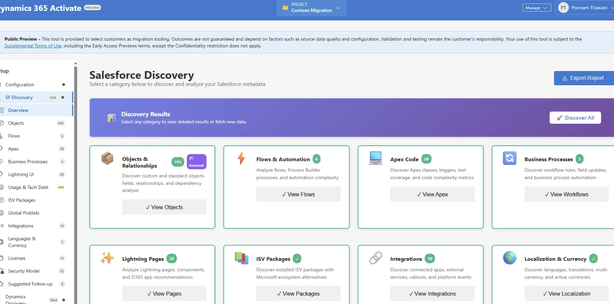

Dynamics 365 Activate is here. Where is the one for NAV?
Microsoft now has an AI migration tool for Salesforce and SAP ECC customers, and nothing announced for those of us who live in Business Central. I think that gap will close, but a tool will not fix the reason NAV customers stay where they are.
What Microsoft presented at Ignite
Dynamics 365 Activate, formerly Project Mia, is an AI tool that analyzes an existing environment, generates configurations and migrates data. At Ignite 2026 it is generally available for CRM, with Salesforce as the first target, and in private preview for ERP, starting with SAP ECC.
- Sales and CRM. Activate arrives with Copilot plugins for Sales, Customer Service and ERP, and even a Salesforce in Copilot plugin. The play: make leaving the competitor cheap, and make the CRM something nobody has to open.
- SAP ECC. Partners can use Activate to analyze processes, customizations and dependencies and scope the project. The timing is deliberate: SAP ends mainstream maintenance for ECC in 2027.
- F&O. Specialized agents for requirements, configuration, data migration, testing and cutover, with no general availability date yet.

An analyst quoted by CIO called it an accelerator, not an autopilot. And in all the Activate coverage I read, there is not one mention of Business Central or NAV.
Why on-premises customers stay
Microsoft does not publish how many customers are still on-premises, so I will not give a number. The reasons below come mostly from partners who sell migrations, so read them as perspectives, not data.
- It still works. One partner put it well: the pain of change has not yet outweighed the pain of staying put.
- Customizations. Business-critical customizations did not migrate automatically, and the code drifts further from standard every year.
- The version gap. Some are on a NAV so old they doubt they can ever catch up, and there is no direct jump: NAV 2015 to 2018 go through Business Central 14 first.
- Windows client and ISV add-ons. Both need a replacement before the move, per the same ArcherPoint piece.
- Putting it off until something breaks. A Mibuso poster described the usual path for heavily customized systems as waiting until a tax update or a new Windows version forces the issue.
None of the reasons I found is about missing functionality in Business Central. They are about cost, debt and inertia.
My take: will Business Central get its own Activate?
My answer: yes, I expect an Activate-style tool for moving NAV and on-premises customers to the cloud, but it will speed projects up, not remove the reasons above. That is my reading of the signals, not an announcement.
Why I think it will come
- The pieces already exist. The F&O version already has agents for requirements, configuration, data migration, testing and cutover, which is most of a NAV upgrade. Microsoft's partner programme already targets customers moving from on-premises ERP to Business Central or the F&O apps.
- Moving an on-premises customer is the cheapest growth Microsoft has. At Directions NA 2025, Bryan Goode told partners to move them to the cloud aggressively and spoke of a huge base still on-premises.
- NAV to Business Central is a shorter distance than Salesforce to Dynamics. The two products share the same code base lineage. Known source, known target: the case Activate was designed for.
Why I am cautious
- The hard part is customizations, not data. Twenty years of C/AL code, each system unique. Microsoft's route depends on how heavily customized the system is and whether you migrate or reimplement.
- ERP Activate is still in private preview, with no date.
- Partner economics. A tool that cuts effort helps the customer but shrinks the billable project, so partners must see it as a way to win more migrations.
- Inertia is not a tooling problem. A tool lowers the cost of a project. It does not create the urgency to start one.
Business Central is not being forgotten
At Directions EMEA 2026, Microsoft showed Edit with Copilot (public preview targeted for April 2027), business skills, and the Expense Agent in every country where Business Central is sold. The agent story for Business Central runs on its own track. I read its absence from Activate as timing, not neglect.
What I would want from a NAV-to-BC Activate
- Discovery. Read the objects, diff them against standard, and use usage data to show which customizations anyone still runs.
- Disposition. For each customization: standard feature, AppSource app, extension, or retire.
- Generation. Draft the AL extensions and their tests, with a human reviewing every one.
- Data and cutover. Map data through the supported upgrade path, reconcile balances, and produce the cutover plan.
That is the work good partners already do by hand. The opportunity is to make it repeatable and cheaper, so "the project is too big to start" stops being an answer.
Where this leaves us
The calendar will decide for your customer, not the tool, and the useful work starts before any tool exists.
- NAV and on-premises customers: check your version's support status, inventory your customizations and add-ons now (that inventory drives the cost, and any future tool will ask for it first), and ask your partner about the migration incentives announced for FY27.
- Partners: build a repeatable NAV assessment now, with or without Microsoft's tool, and watch the Activate ERP preview for any Business Central scope.
My bet: Microsoft extends Activate toward Business Central within the next year or so, and the first versions are best at assessment and planning and weakest at converting the code. I would be glad to be wrong about the second part.
Sources
- MSDW: Ignite 2026 · MSDW: Activate for ERP · Pulse 2 · CIO · SAP
- MSDW: Directions NA 2025 · MSDW: NAV to BC in 2026 · Microsoft partner ERP engagements · Microsoft Learn, 2018 release notes · TharangaC: Directions EMEA 2026
- Western Computer · Sikich · ArcherPoint · Mibuso
Some of these I read as search results, not as full pages: check before quoting.